Chapitre 4 De l'Aimant des Sages
De même que l'acier est attiré vers l'aimant, et que l'aimant se tourne spontanément vers l'acier, de même l'Aimant1 des sages attire leur Acier. C'est pourquoi, l'Acier étant, je vous l'ai appris, la minière de l'or, il faut pareillement considérer notre Aimant comme la vraie minière de notre Acier.
II
En outre, je déclare que notre Aimant a un centre caché, où gît une abondance de sel2. Ce sel est un menstrue dans la sphère de la Lune3, et peut calciner4 l'or. Ce centre, par une inclination originelle, se tourne naturellement vers le pôle5, où la vertu de notre Acier est élevée par degrés. Au pôle, se trouve le coeur de Mercure6, qui est un vrai feu où est le repos de son Seigneur. Naviguant sur cette vaste mer7, pour aborder à l'une et à l'autre des Indes, il gouverne sa course par l'aspect de l'étoile du nord que notre Aimant te fera paraître.
III
Le Sage s'en réjouira, mais le fou8 en fera peu de cas et ne s'instruira pans dans la sagesse, quand bien même il aurait vu le Pôle central tourné vers le dehors et marqué du signe reconnaissable du Tout- Puissant. Ils ont la tête si dure9 qu'ils verraient des prodiges et des miracles secs sans pour autant abandonner leurs faux raisonnements et entrer dans le droit chemin.
1.Le rémora ou "remore" des auteurs classiques (du latin remora, qui retarde) tire son origine hermétique du fait que les Anciens le croyaient capable d’arrêter un navire. Il symbolise l’aimant animé qui fixe le Mercure ; il doit être rapproché d’autres termes utilisés par les Anciens, tels que lupus (mors armé de pointes) et Chalybs (mors d’acier) se rapportant à Chalybes = le peuple du Pont, renvoyant à l’eau pontique. Cette eau pontique dont Fulcanelli nous dit (DM, II, p.205) :" [l’eau pontique], notre mercure, la mer repurgée avec son soufre...l’eau de notre mère, c’est-à-dire de la matière primitive et chaotique appelée sujet des sages ".
Le rémora apparaît donc soit comme le symbole d’un agent fixateur soit comme le symbole de la fixation elle-même. Consultons les DM, I, p322 :
" C’est aussi, selon la version du cosmopolite, le poisson sans os, échénéis ou rémora qui nage dans notre mer philosophique "
qu’il faudra préparer, assaisonner et cuire. Il est diversement comparé à la fève (noir bleuâtre), à un cocon (tunica = coque, coquille), au chabot, petit poisson noirâtre, au basilic, i.e. regulus ou petit roi, à la sole (poisson, solea = sandale, pantoufle, garniture de sabot, sabot). La couleur bleu foncé habituellement associée au rémora évoque l’azur du sommet des montagnes (caerula). Le rémora est aussi assimilé au dauphin (petit roi). Une des gravures de Lambsprinck évoque cet animal :
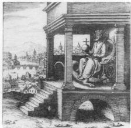
FIGURE IIl s’agit de la 9ème figure où l’on voit un vieillard couronné, terrassant un dragon, portant une terre, un bourdon et la figure du dauphin, à sa gauche. Le trône montre assez l’analogie avec l’athanor, avec l’escalier figurant les degrés requis pour la coction hermétique (7 marches), l’évasement du bas sur lequel il n’y a pas lieu de s’étendre. Une partie du texte dit :
" Je donne la puissance, la santé durable - Et en outre l’or, l’argent, les gemmes et les pierres précieuses...Hermès m’a octroyé le nom de Seigneur des forêts ".
La légende indique :
" Si la fortune voulait de Rhéteur tu deviendrais Consul. Si aussi elle voulait, de Consul tu deviendrais Rhéteur. Comprends que le premier Degré de la Teinture est réellement apparu "
(in G. Ranque, op. cité, pp. 176-177).J’ai souligné les mots importants qui prendront un sens très précis ultérieurement. La forêt ne peut que renvoyer aux chênes. En effet, forêt de chêne se dit aesculetum qui renvoie aux acceptions suivantes : aesculatus = de chêne - aesculus = chêne rouvre, consacré à Jupiter (Zeus) sans rapport avec le chêne kermès (allusion au sulfure d'antimoine)... - Aeson = père de Jason (Eson) ; la racine mère est aes = airain, bronze, cuivre. Dans les DM, II, p.129, le rémora est comparé à l’échéneis du cosmopolite ou au pilote de l’onde vive, à l’énergie ignée de la salamandre. Une autre image du dauphin se retrouve sur l’une des planches du Mutus Liber :
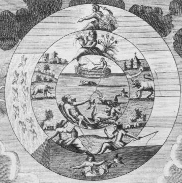
FIGURE II
(agrandissement)Le dauphin peut représenter le principe humide et froid de l’œuvre, c’est-à-dire le Mercure qui se coagule au contact du Soufre. Ce dernier est souvent symbolisé par une ancre marine. Nous avons un commentaire précis de ce qui se produit dans cette partie de l’œuvre, aux DM, II, p.187 :
" La longue opération qui permet de réaliser l’empâtement progressif et la fixation finale du Mercure, offre une grande analogie avec les traversées maritimes...Le dauphin nage à la surface des flots impétueux, et cette agitation dure jusqu’à ce que le rémora...arrête enfin, comme une ancre puissante, le navire allant à la dérive ".
Fulcanelli nous dresse ainsi un processus de cristallisation progressif où par l’action du rémora –dont le dauphin représente le « résultat provisoire » de même que la sirène (caisson 3 du château de Dampierre, septième série)- se réalise la coagulation du Mercure par une « proportion très inférieure de Soufre ».
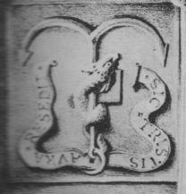
FIGURE IIICette dernière remarque est fondamentale à considérer : elle nous renseigne en effet sur la nature exacte du Soufre, métal incorporé sous forme de trace (uncia = la douzième partie d’un tout, petite quantité à rapprocher de uncus = grappin, crochet et de uncino = pêcher à l’hameçon). De là, ces ancres, ces pêches à la ligne que l’on retrouve sur les planches du Mutus liber ou sur le poêle de Winterthur (1). Nous allons revenir à présent sur quelques travaux de Newton :
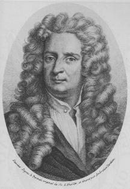
FIGURE IVIsaac Newton était convaincu que le mot regulus (petit roi) était la dénomination réelle du régule de l'or obtenu par l'antimoine métallique ; au XVIIe siècle, il s'agissait d'un processus courant de raffinage de l'or. Newton considérait en outre l'antimoine comme un corps capable d'agir par attraction, ayant en arrière pensée le souci d'élaborer une théorie attractive ou gravitationnelle pour les petits éléments, à l'instar des succès éclatants qu'il avait obtenus en Mécanique céleste. Après l'or, Newton, toujours systématique, s'attaque aux autres métaux pour obtenir le régule étoilé. Il fit d'abord des expériences avec quatre métaux : l'antimoine (métalloïde), le fer, le plomb, le cuivre puis ajouta les proportions concernant le régule de l'étain. Cette question de proportion nous est précieuse puisqu'elle fait directement référence -pour qui veut bien s'en donner la peine- au "poids de nature ou poids de l'art" dont ont parlé de manière si évasive Philalèthe, B. Valentin ou même Fulcanelli. Dans tous les cas, donc, Newton utilisa l’antimoine et chacun des métaux que nous avons évoqués. Dans son ouvrage sur Newton (op. cité, pp.295-296, Annexe B) B.J. Dobbs reprend le manuscrit de Newton de l’essai de préparation des régules étoilés (University Library, Cambridge, collection Portsmouth MS Add. 3975, f. 42 r, v pp. 81-82).
Au cours des années 1670-75, Newton pratique un autre type d’expériences : les amalgamations. Il s’agit d’opérations que Newton menait à des températures élevées. Dans tous les cas, figure le régule étoilé d’antimoine et très souvent le mercure commun (vif-argent vulgaire). Il est remarquable que deux substances apparaissent très souvent citées dans les essais réussis : l’étain et le plomb qui sont des métaux mous et relativement fusibles. Il semble aussi que Newton ait employé le bismuth (1,2). Ces amalgames avaient une note commune : le mercure est instable par rapport aux autres métaux et il n’est pas toujours possible de former un amalgame en ajoutant du mercure à la suite d’un autre métal en fusion, car le mercure se volatilise à cause de la chaleur dégagée par la masse en fusion. Le point de fusion bas de l’étain et du plomb permettait donc d’y inclure du mercure avant que celui-ci ne se volatilisât. B.J. Dobbs met très bien en évidence, en outre, que la démarche de Newton faisait intervenir un concept alchimique très important : la médiation.
2. Ce passage est délicat à interpréter. Il se pourrait qu'il s'agisse du processus qui débute lors de l'animation du Mercure. Si tel était le cas, cela pourrait nous renvoyer à un texte de De Cyrano Bergerac dans une partie de son Histoire comique, contenant les Estats et empires du soleil (Paris, Charles de Sercy, 1662). Cette animation du Mercure est le théâtre d'un combat entre le fixe et le volatil ; Fulcanelli rapproche ce combat d’une lutte à outrance de créatures dissemblables que l’on a déjà vues supra.
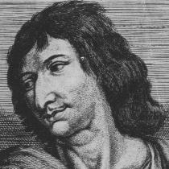
FIGURE VOn notera qu'E. Canseliet trouve à De Cyrano Bergerac des allures de pur type gaulois. Il parle du pur ovale de son visage qu'encadre une épaisse et longue chevelure.
Voici le texte auquel se réfère l’Adepte :" Au monde de la terre d’où vous êtes, et d’où je suis, la bête à feu s’appelle salamandre, et l’animal glaçon y est connu par celui de remore. Or vous saurez que les remores habitent vers l’extrémité du pôle, au plus profond de la mer glaciale; et c’est la froideur évaporée de ces poissons à travers leurs écailles, qui fait geler en ces quartiers-là l’eau de la mer, quoique salée. La plupart des pilotes, qui ont voyagé pour la découverte du Groenland, ont enfin expérimenté qu’en certaine saison les glaces qui d’autres fois les avaient arrêtés, ne se rencontraient plus; mais encore que cette mer fût libre dans le temps où l’hiver y est le plus âpre, ils n’ont pas laissé d’en attribuer la cause à quelque chaleur secrète qui les avait fondues; mais il est bien plus vraisemblable que les remores qui ne se nourrissent que de glace, les avaient pour lors absorbées. Or vous devez savoir que, quelques mois après qu’elles se sont repues, cette effroyable digestion leur rend l’estomac si morfondu, que la seule haleine qu’elles expirent reglace derechef toute la mer du pôle. Quand elles sortent sur la terre, car elles vivent dedans l’un et dans l’autre élément, elles ne se rassasient que de ciguë d’aconit, d’opium et de mandragore...Cette eau stigiade de laquelle on empoisonna le grand Alexandre et dont la froideur pétrifia les entrailles, était du pissat d’un de ces animaux. Enfin la remore contient si éminemment tous les principes de froidure, que, passant par-dessus un vaisseau, le vaisseau se trouve saisi du froid en sorte qu’il en demeure tout engourdi jusqu’à ne pouvoir démarrer de sa place. C’est pour cela que la moitié de ceux qui ont cinglé vers le nord à la découverte du pôle, n’en sont point revenus, parce que c’est un miracle si les remores, dont le nombre est si grand dans cette mer, n’arrêtent leurs vaisseaux. Voilà pour ce qui est des animaux glaçons".
3. Il ne peut s'agir ici que du Sel des Sages dont le symbole est la salamandre, c'est-à-dire le résultat d'une partie de l’Oeuvre au blanc. J’ai déjà dit que les textes de Fulcanelli devaient être étudiés avec beaucoup de prudence ; nous en avons un exemple lorsqu’il reparle de la salamandre (Les Mystères, p.181) par l’évocation du mythe de Tristan de Léonois, à propos du groupe de Tristan et Yseult, dans la chambre du Trésor du Palais Jacques-Coeur. Il confond exprès la première opération de l’œuvre (l’obtention du premier Mercure) avec les opérations qui conduisent à l’obtention du dissolvant universel. Du coup, le combat de l’alchimiste et du dragon dans l’Hermès dévoilé de Cyliani apparaît comme mené contre le sujet des Sages pour obtenir les composants du dissolvant universel et non pas l’obtention du Sel des philosophes ainsi que je le pensais avant. Cela est important à considérer car il pourrait sembler qu’il y ait en fait non pas 1 mais 2 voire 3 « sujet des Sages » selon la définition qui en est donnée.
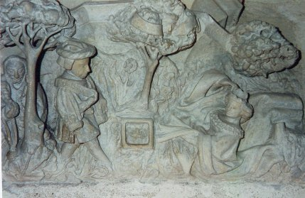
FIGURE VI
(palais Jacques-Coeur, chambre du Trésor ; groupe de Tristan et Yseult)Pour les Adeptes, le « sujet des Sages » se rapporte uniquement à l’obtention d’une partie du dissolvant universel...Dans ces conditions, il y a deux substances qui doivent être trouvées, l'une qui est des parties d'Aphrodite et l'autre, des parties d'Ariès. Dans les DM, I, p.31, E. Canseliet, dans la préface de la 2ème édition (1958) indique que l’ouvrage [les DM] débute par la salamandre de l’Hôtel du Bourgtheroulde (XVIe siècle) à Rouen, posé en frontispice et se termine avec le Sundial d’Edimbourg en manière d’épilogue : c’est indiquer exactement le résultat de l’œuvre au blanc et la nature cristalline de certains des composants (des sels) ou la forme que peut acquérir la Pierre au rouge dans certaines conditions. Profitons-en pour signaler dans les DM, I, p.250, une chausse-trape tendue à nouveau par l’adepte : il crée une confusion entre le feu secret et le résultat de la destruction -i.e. la mort, dissolution ou véritable putréfaction- du dragon écailleux. Le discours s’éclaircit néanmoins à la citation de Limojon de Saint-Didier, extraite de la Lettre aux vrays disciples d’Hermès (in le Triomphe hermétique, Henry Wetstein, Amsterdam, 1699) :
" Je vous plaindrois beaucoup si comme moy, apres avoir connu la véritable matière, vous passiés quinze années entierement dans le travail, dans l’estude et dans la meditation, sans pouvoir extraire de la pierre le suc precieux qu’elle renferme dans son sein, faute de connoistre le feu secret des sages, qui fait couler de cette plante seiche et aride en apparence une eau qui ne mouille pas les mains " (j’ai respecté l’orthographe et la ponctuation du texte cité par Fulcanelli).
4. La calcination : C'est p. 105 que Fulcanelli nous en parle dans les Mystères :
"Une femme, aux longs cheveux mouvants comme des flammes, vient ensuite. Personnifiant la calcination, elle presse sur sa poitrine le disque de la Salamandre qui vit dans le feu et se nourrit de feu."
Il nous précise que ce lézard fabuleux est ce sel central qui garde sa nature jusque dans les cendres des métaux et que les Anciens ont nommé Semence métallique. L'Adepte nous précise ensuite que cette calcination ne peut se réaliser qu'avec un agent occulte ou feu secret : c'est le dissolvant universel. Nous retiendrons aussi l'allusion à la chevelure particulière, en souvenir de ce que nous avons dit du rébus de l'église Saint-Grégoire-du-Vièvre (1) : les cheveux (trichitis) sont pour nous l'occasion de revenir sur certains détails d'iconographie des traités de Fulcanelli et de Canseliet : rappelons-nous en effet la cheminée du grand salon de Fontenay-Le-Comte ;
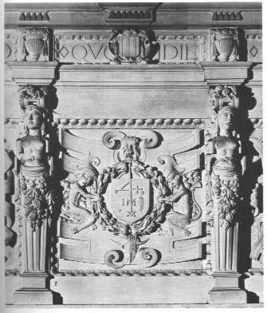
FIGURE VIInous y trouvons deux gnomes dont les membres inférieurs sont couverts de poils longs et touffus. Dans les Deux Logis Alchimiques d'Eugène Canseliet, on trouve aussi une allusion à la chevelure dans le chapitre La Sirène noire et enceinte ;

FIGURE VIIIil nous dit notamment :
"...la femme incarne le mercure qui, lui-même, en qualité de premier principe, correspond à l'esprit. De celui-ci, les cheveux longs sont l'image rayonnante qui établissait...l'antinomique différence entre les Gaulois à l'abondante chevelure, et les romains, sévèrement tondus...".
Nous révélons, lors de l'examen de l'Atalanta fugiens la raison de cette allégorie sur les Gaulois et les Romains. Retenons l'assonance entre antinomique et « antimonique »...C'est ici le lieu semble t-il, de nous souvenir de la Clef I de B. Valentin où l'on voit un vieillard nu et glabre effeuiller littéralement un globe, à droite de la gravure, àl'aide d'une faux. Ce vieillard rappelle celui des Figures Hiéroglyphiques de Nicolas Flamel
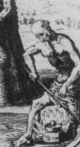
FIGURE IX
(détail de droite de la Clef I)Ce détail capillaire est de première importance : glabre, tondu, chauve, tous ces adjectifs renvient, en grec, à acnooV, en proche assonance phonétique [et spirituelle] de acnh : efflorescence, écume, rosée céleste [la rosée de mai dont une interprétation fautive de son origine a induit tant de chercheurs à l'échec], flot de larmes [et voila pour les larmes qu'évoquent le pseudo-Flamel dans les Figures hiéroglyphiques à propos du sang versé par les Innocents], enfin poussière de métal [c'est-à-dire scorie].
Un seul sel donne une efflorescence parmi tous ceux que nous avons cité : le natron ou carbonate de soude. Ce sel est congénère du borith [carbonate de potasse] et nous avons vu que tous deux pouvaient être employés dans la préparation du Mercure philosophique. De plus, d'autres mots, là encore en proche assonance, s'offrent à nous : acnuV : obscurité, ténèbres [voila pour la putréfaction] ; acnuow : sombre, obscur, mais aussi secret, caché [arcanum]. Enfin, on trouve acnooV, sans verdure, qui explique l'allusion d'E. Canseliet à « l'herbe rare que ronge un lièvre » dans son examen de la porte alchimique de la villa Palombara.
On voit donc que par le seul examen de détails capillaires, on peut avoir une idée renouvelée de la nature exacte du vieillard qu'évoquent tant de textes alchimiques : c'est le Saturne des Anciens qui dévore sa progéniture mais il n'a sans doute nul rapport avec le plomb vulgaire ; l'antimoine, seul, se révèle être, d'après Artéphius, des parties de Saturne [cf. le Livre secret d'Artéphius]. Bien sûr, il s'agit d'un antimoine spécial qui n'a que peu de rapport avec la stibine naturelle ; si l'étudiant lit le texte de Jacques Tol sur le sujet, il comprendra peutêtre mieux la nature et la spécificité de l'antimoine saturnin d'Artéphius.
Ce globe ou oeuf évoque une certaine variété de sel dont parle Pline l'Ancien à propos de l'île plus connue actuellement sous le nom de Stromboli (Strongyle) : nous noterons qu'en grec, strongylos renvoie à une sphère, à ce qui est rond. Pline évoque notamment une variété de sel naturel qui pourrait être un sulfate d'apparence massive et globulaire. Ce sel serait de quelque utilité dans le Grand Oeuvre : il est des parties d'Ariès et possède aussi une partie importante de Soufre blanc et parfois un métal à trois pointes.
De cette calcination, il en est question dans les DM, I, p.276 : ce sont en fait des lavages ignés et des séries de purification qui se font dans le feu, par le feu et avec le feu. c'est assez dire que ces lavages sont donc conduits à haute température (le degré de température semble indiqué par l'expression : Vulcain ardent), au sein d'un composé qui est le dissolvant universel et dont l'objet à laver est un corps résistant aux hautes températures. Le secret réside dans le moyen ou stratagème permettant de maintenir le tout sous forme fluide suffisamment longtemps.
5.Tout ce qui touche au pôle semble graviter autour de Jupiter : ainsi, Arcas est le fils de Jupiter et de Callisto en rapport avec l'ours et l'étoile pôlaire, outre qu'Arcas renvoie aussi à Mercure. Voyez aussi une partie de la citation de De Cyrano Bergerac supra. Les alchimistes envisagent aussi le problème du renversement des pôles : une allusion directe nous en est donnée aux DM, II, p.339 quand Fulcanelli au chapitre du Déluge nous assure que :"C'est, en quelque sorte, la description type des catastrophes périodiques provoquées par le renversement des pôles...L'arche salvatrice nous semble représenter le lieu géographique où se rassemblent les élus à l'approche de la grande perturbation".
Cyliani, dans son Hermès dévoilé parle aussi de ce renversement des pôles :
"Une comète, qui a été en premier lieu une nébuleuse peut par son action en s'approchant trop près d'une planète soulever ses eaux, donner lieu à un déluge en abaissant ou relevant son axe, ce qui change le lit des mers, met à jour ce qui était couvert par les eaux...".
Le pôle Nord, c'est en latin : axis qui peut se traduire aussi par : axe, char, axe du monde, voûte du ciel, orbe de la volute d'un chapiteau. Je n'ai pas besoin ici de m'étendre plus longuement sur le char, symbole très présent en alchimie : voyez le Char de Triomphe de l'Antimoine, attribué à Basile Valentin. Le char de triomphe représente l'allégorie suivante : il s'agissait de l'entrée solennelle à Rome du général victorieux qui montait au Capitole sur un char traîné de chevaux blancs, revêtu lui-même de la toga picta et de la tunica palmata, la tête ceinte de lauriers (= tenue de Jupiter Capitolin). La tunica palmata fait référence par le mot tunica au cocon (coque, coquille) et palmata renvoie à « victoire » et cabalistiquement au mont de la Victoire, c’est-à-dire au Mont-Joie dont Fulcanelli nous parle dans Les Mystères, p.68 ; c’est une allégorie dont le sujet est la rosée qui s’élève jusqu’au mont de la Magnésie (Mont-Joie), cette rosée, c'est d'après E. Kelly, le Lion vert de Ripley :
"Les Métaux, comme affirmé précédemment, contiennent un sel, duquel le feu et la sagacité de l'artiste peuvent extraire une eau que les Sages nomment eau Mercurielle, lait de la Vierge, Lunaire, rosée de Mai, le Lion Vert, le Dragon, le Feu des Sages. Cette eau Mercurielle, ils l'ont comparée à la corrosive eau-forte, car de même que ces eaux...corrodent les métaux et les dissolvent, ainsi cet esprit Mercuriel, ou eau, dissout son corps et en sépare la Teinture."
Le char, c'est aussi celui de Cybèle qui y attela 2 lions qui ne sont autres que Hippoménês et Atalante. Ils constituent les composants du feu secret. J'ai développé cette histoire à deux reprises (1,2). C'est enfin Diane en Tauride, qui est Artémis, montée sur un char traîné par 2 taureaux ; elle porte un flambeau et son front est surmonté d'un croissant de lune. Des étrangers lui étaient sacrifiés.
La voûte renvoie à arcanum, c'est-à-dire aux mystères mais arcanum c'est aussi un procédé d’étamage des métaux qui était secret et attribué aux Gaulois. L'arcanum duplicatum, enfin, est probablement le nom vulgaire d'une partie importante du feu secret.
6. Philalèthe envisage ici le grand oeuvre dans la phase de la coagulation, à ce moment où la résine de l'or reçoit le Soufre, c'est-à-dire l'or enté ou greffé dont parle Fulcanelli (Les Mystères, p.67) :"...la légende d'Enée, sauvant son père et ses pénates des flammes de Troie, et aboutissant, après de longues pérégrinations, aux champs de Laurente, terme de son voyage".
Laurente ne figure certes pas parmi les meilleures transpositions cabalistiques de Fulcanelli mais l'image est correcte (Laurente est une ville du Latium, voisine de Lavinium ; là encore, clin d'oeil possible de l'Adepte, car Lavinium est phonétiqument proche de lavo = baigner, arroser ; or, à ce moment, nous assistons au bain des astres).
7. Cette mer ou « mère » mercurielle est évidemement le dissolvant universel. Le Pilote de l'Onde vive -cité par Fulcanelli, DM, I, p.437 : c'est le titre d'un ouvrage alchimique de Mathurin Eyquem (chez Jean d'Houry, Paris, 1678)- est représenté par l'étoile du Nord ; cette mère (mer) fait l'objet de la planche initiale du Petit Traité de la Pierre philosophale de Lambsprinck (réédité en 1970 par les soins de Georges Ranque, dans sa Pierre philosophale ; j'ai dit ailleurs toute la considération que j'avais pour ce conteur attachant et simple - voyez le Triomphe Hermétique de Limojon).

FIGURE XNe voit-on pas sur cette magnifique gravure le pilote nous saluer ? Ne peut-on imaginer qu'il s'agit peut-être du bâteau Argo qui figure sur la splendide fontaine du Vertbois, bas-relief du XVIIe siècle à Paris ? Ce voyage maritime a fait l'objet de transpositions répétées, telles que celle de Nicolas Flamel, à Compostelle ou que celle de De Cyrano Bergerac dans la Lune.
8. Ce fou a valeur du Mercure ; Fulcanelli en parle aux DM, I, p.427 :"Nous conservons le souvenir de certain dessin représentant un bouffon assis, les jambes croisées en X, et, dissimulant derrière son dos un volumineux soufflet...Leur costume bigarré -ils portaient à la ceinture une vessie qu'ils qualifiaient lanterne..[manifestent une origine hermétique]"
et plus loin :
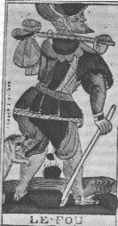
FIGURE XI
(Tarot de Jerger, XVIIe siècle)"Enfin, le mercure, appelé le fou du Grand Oeuvre, à cause de son inconstance et de sa volatilité, voit sa signification confirmée dans la première lame de tarot, intitulée le Fou ou l'Alchimiste".
Ce fou comme on peut l'apercevoir est aussi un voyageur : comme il fallait s'y attendre, c'est la tête (ou calebasse ou encore caboche...)qui est son point faible ; il est en outre muni du bâton de pélerin ce qui signe littéralement sa nature. De ce voyageur, Fulcanelli nous assure :
"...qu'il est joyeux et satisfait d'avoir accompli son voeu. Car la besace est vide, le bourdon sans calebasse indiquent...[qu'il] n'a plus besoin...du boire ni du manger".
C'est dire par là (calebasse est mis pour cucurbite et caboche pour la taille) que le travail est accompli et que la pierre a signé de l'étoile sa naissance. Cette image ne laisse pas de ressembler à l'un des Ripley Scrowles. De Ripley, on retiendra d'abord son Opera omnia (1649) dont Newton prit des notes et qu’il copia intégralement (Trinity College, NQ. IO149).
Georges Ripley fut chanoine de Saint-Augustin à Bridlington (York) et fit, comme Flamel, un voyage initiatique, mais qui semble réel, à Rome (1477). Il a écrit The Compound of Alchimy or the ancient hidden Art of Archemie (Londres, 1591 in Ferguson, vol II). Ce recueil a été traduit sous le titre Les Douze Portes, Paris (1979) par B. Biebel. On lui attribue les Ripley Scrowles qui sont des rouleaux peints et manuscrits dont certains revêtent une importance certaine dans la conduite de certaines opérations : on retiendra en particulier une gravure très singulière d'un personnage qui semble être animé d'une sorte de « crampe de rotation » pour paraphraser le titre d'un tableau de Salvador Dali : la Crampe de plâtre.
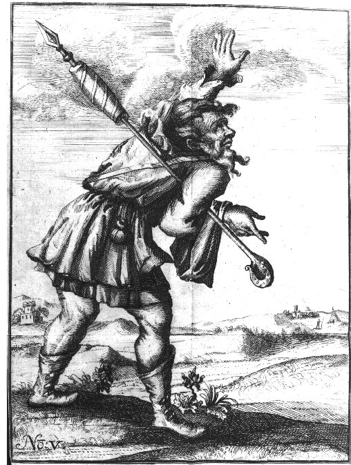
FIGURE XIICe personnage qui nous rappelle le fou du tarot a l'aspect de quelqu'un auquel une main étrangère aurait imprimé une torsion irréductible : ainsi apparaît-il littéralement contourné : il symbolise pour nous le temps des travaux propres à assurer l'accroissement et la multiplication (--> multiplex = contourné, à rapprocher de : torsadé = torqueo stamina). Effectivement, ce fou a sur son bâton un fil totalement enroulé -que nous rapprocherions volontiers des quenouilles de fileuses- et le personnage suggère un irrésistible mouvement de rotation, de torsion ; il est au sens littéral du terme tordu et tourmenté. On aura soin de rapprocher de la FIGURE XII une autre image tirée du Théâtre de l'Astronomie terrestre, cité ailleurs et que nous reproduisons :
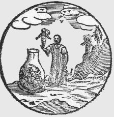
FIGURE XIIILa légende indique :
"L'image nous montre un vase semblable à un urinal, encerclé à sa base par un anneau de paille torsadée; à l'intérieur sont Mercure, Mars et Saturne, couchés sur le dos, et un vieil homme est sur le point d'y jeter Vénus et Jupiter. Derrière le vieil homme, sur le rocher noir, se tiennent le Soleil et la Lune."
A quoi donc peut bien renvoyer cet aspect torsadé ? Victor Hugo -dont on n'a pas oublié l'Alchimiste de Notre-Dame de Paris- écrit dans les Misérables (III. Marius, 4. Les amis de l'ABC) que :
"Le Brutus qui tua César était amoureux d'une statue de petit garçon. Cette statue était du statuaire grec Strongylion, lequel avait aussi sculpté cette figure d'amazone appelée Belle-Jambe, Eucnemos, que Néron emportait avec lui dans ses voyages".
Et, cabalistiquement, il n'est pas difficile de faire le rapprochement entre buste et torse ; nous renvoyons donc le lecteur à ce que nous avons compris de l'Histoire Naturelle de Pline (1). C'est ici pour nous l'occasion de glisser ce commentaire que nous tirons aussi des Misérables :
"Un volcan éclaire, mais l'aube éclaire encore mieux".
Le lecteur sagace fera un rapprochement facile entre les pièces de ce rébus spirituel...
9. C'est effectivement du pont aux ânes que parle Philalèthe. On aura soin de relire ce que nous avons dit sur le Pont, la légende de la Toison d'or et les mystères de Cybèle. On jettera aussi un coup d'oeil sur l'Aliboron que cite E. Canseliet à propos de l'Ane-timon, petit jeu de mot de Fulcanelli mais haut en signification hermétique.